Źródła zdjęć
Zdjęcia produktów pochodzą z Wikimedia Commons i są udostępnione na wolnych licencjach. Poniżej autorzy i licencje — przy licencjach CC BY-SA ta lista jest wymagana. Zdjęcia są poglądowe i nie przedstawiają realnego asortymentu.
| Zdjęcie | Tytuł | Autor | Licencja | Źródło |
|---|---|---|---|---|
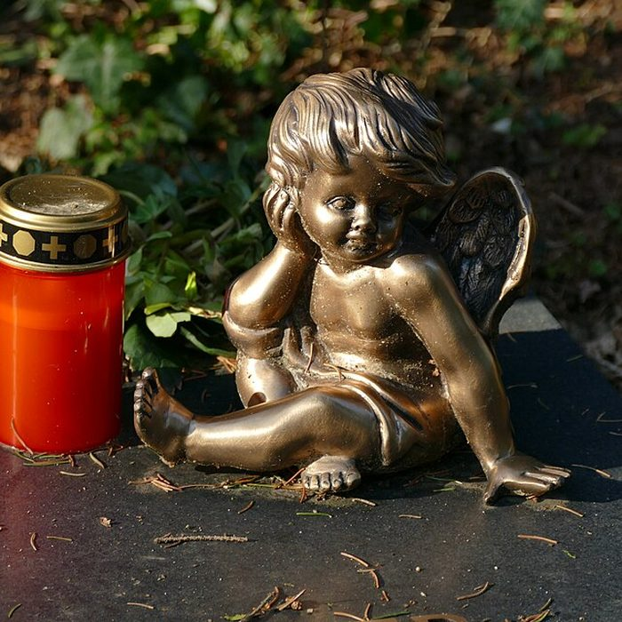 |
Grave candle and decoration on a grave 02.jpg | Kritzolina | CC BY-SA 4.0 | Wikimedia Commons |
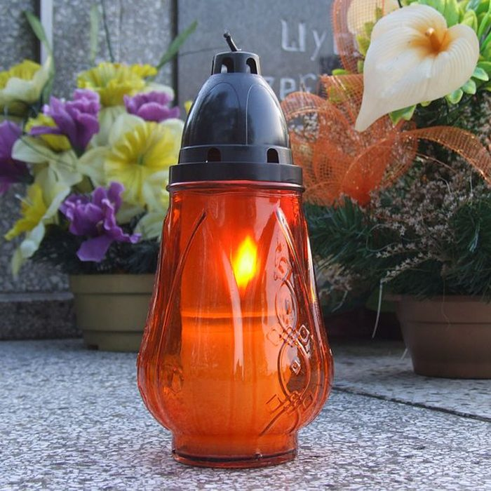 |
Ku pamięci - Bełk 1.jpg | Pudelek (Marcin Szala) | CC BY-SA 3.0 | Wikimedia Commons |
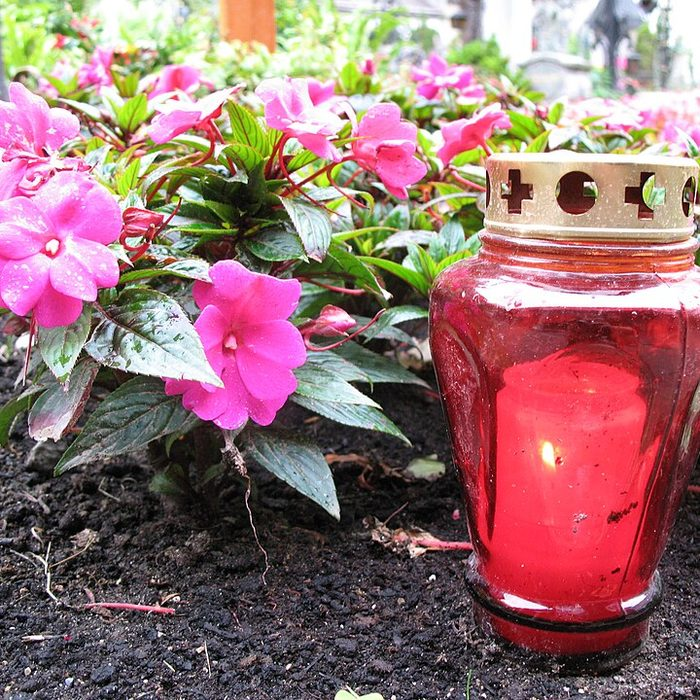 |
1719 - Salzburg - Stiftskirche St Peter - Flowers and grave candle.JPG | Andrew Bossi | CC BY-SA 2.5 | Wikimedia Commons |
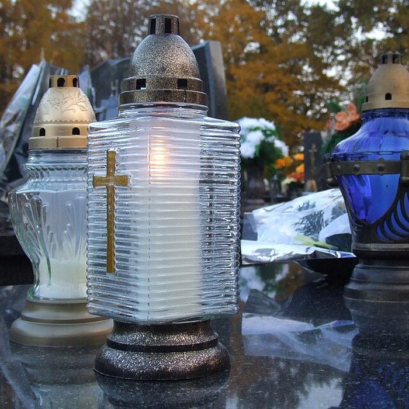 |
Ku pamięci - Bełk.jpg | Pudelek (Marcin Szala) | CC BY-SA 3.0 | Wikimedia Commons |
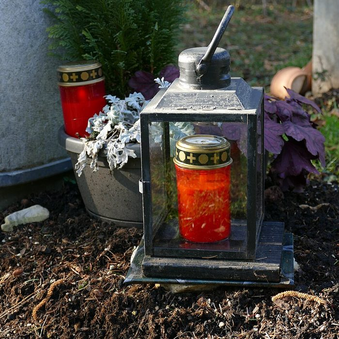 |
Grave candle and decoration on a grave 01.jpg | Kritzolina | CC BY-SA 4.0 | Wikimedia Commons |
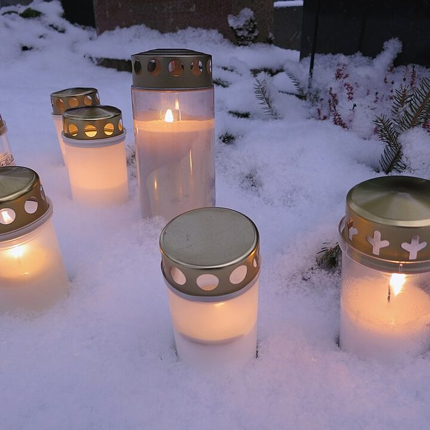 |
Grave candles.jpg | <a href="//commons.wikimedia.org/w/index.php?title=User:Trogain&action=edit&redlink=1" class="new" title="User:T | CC BY-SA 4.0 | Wikimedia Commons |
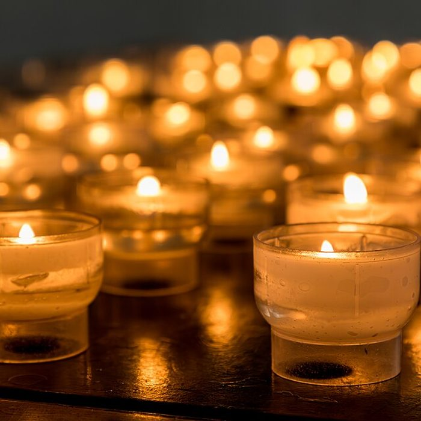 |
Dülmen, Heilig-Kreuz-Kirche -- 2018 -- 1429.jpg | <span title="German photographe | CC BY-SA 4.0 | Wikimedia Commons |
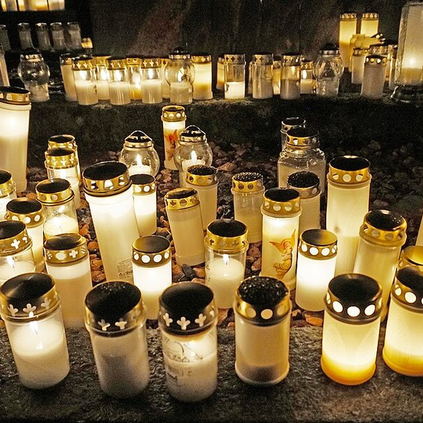 |
Jyväskylä cemetery 2.jpg | Tiia Monto | CC BY-SA 4.0 | Wikimedia Commons |
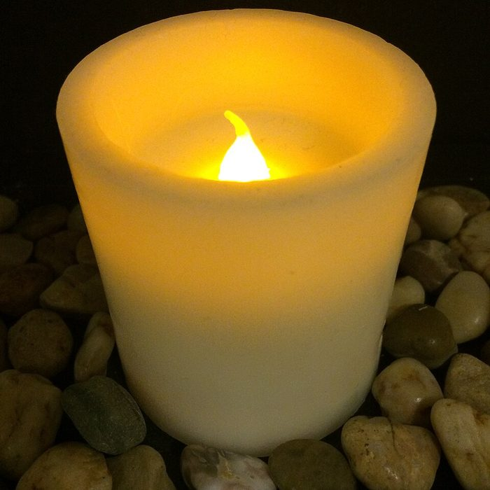 |
Flameless candle, lit.jpg | Megatron Omega< | CC BY-SA 3.0 | Wikimedia Commons |
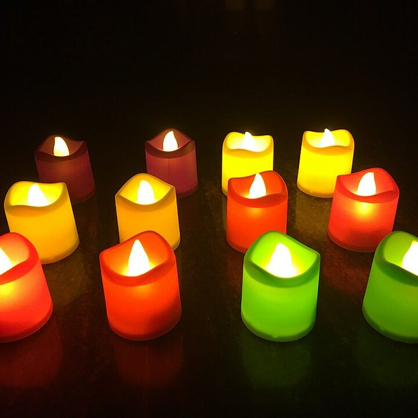 |
LED Candles Lighting.jpg | <a href="//commons.wikimedia.org/w/index.php?title=User:Arisepeter&action=edit&redlink=1" class="new" title="Use | CC BY-SA 4.0 | Wikimedia Commons |
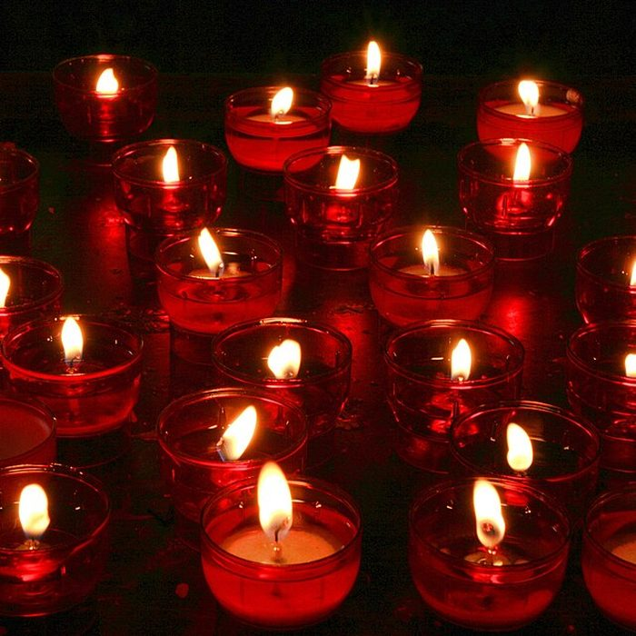 |
Essen Heidhausen - Kamillus-Kirche in 24 ies.jpg | Frank Vincentz | CC BY-SA 3.0 | Wikimedia Commons |
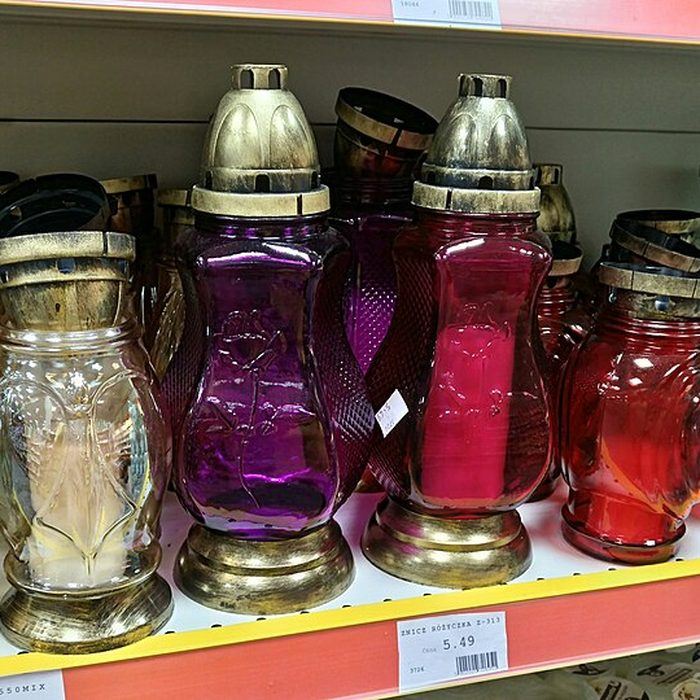 |
Grave candles in Polish supermarket.jpg | <a href="//commons.wikimedia.org/w/index.php?title=User:MichalPL&action=edit&redlink=1" class="new" title="User: | CC BY-SA 4.0 | Wikimedia Commons |
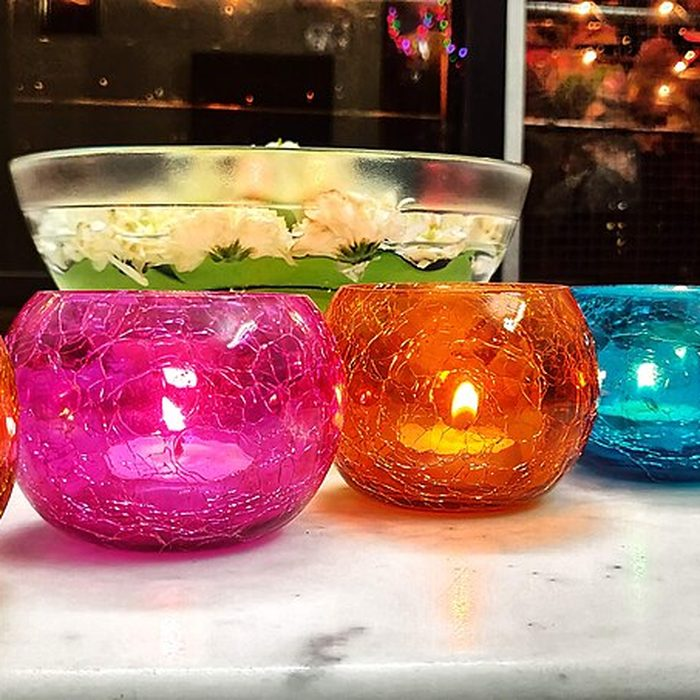 |
Tealight Diyas.jpg | <a href="//commons.wikimedia.org/w/index.php?title=User:Tamilmama&action=edit&redlink=1" class="new" title="User | CC BY-SA 4.0 | Wikimedia Commons |
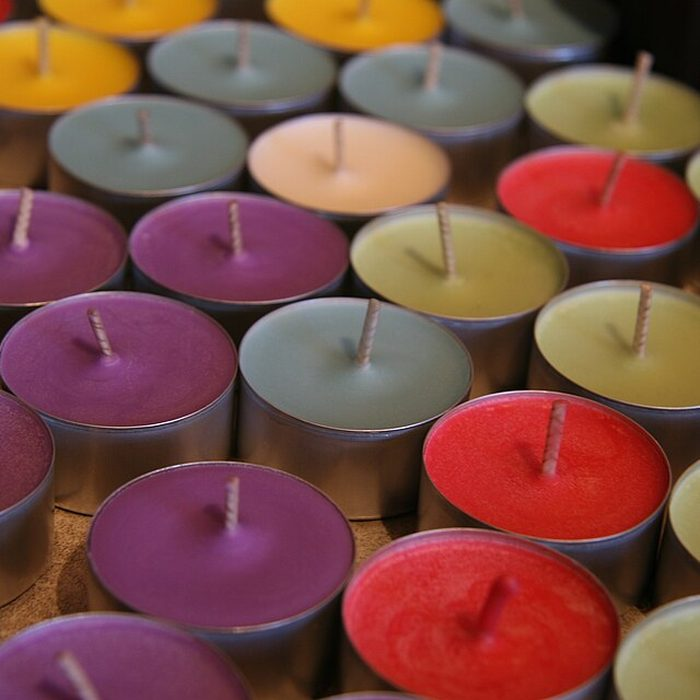 |
Soy tealight candles.jpg | lindsay.dee.bunny | CC BY 2.0 | Wikimedia Commons |
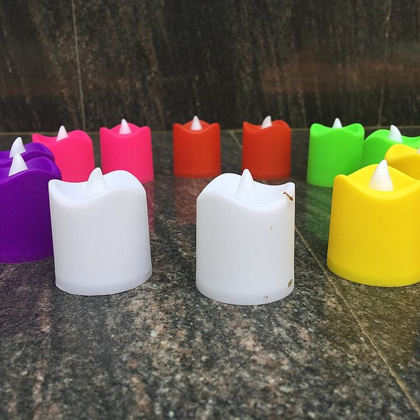 |
LED Candles.jpg | <a href="//commons.wikimedia.org/w/index.php?title=User:Arisepeter&action=edit&redlink=1" class="new" title="Use | CC BY-SA 4.0 | Wikimedia Commons |
 |
030 All Saints Day celebration in Poland - grave candles in the evening.jpg | Marek Ślusarczyk (Tupungato) <a rel="no | CC BY 3.0 | Wikimedia Commons |